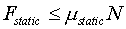
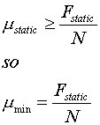

Sorry, wrong answer...
The force of friction must supply all of the inward force needed to deflect the car in its path. Since

it follows that

Where will we get N or F from? USe either the info panel or the calculations that you carried out in the previous pages. Please try again.